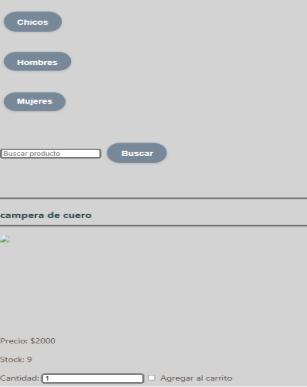
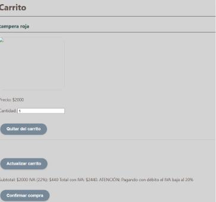
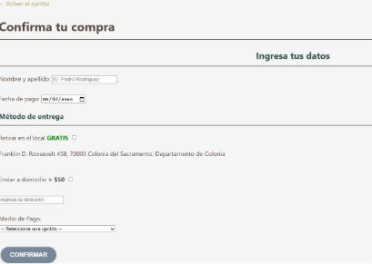
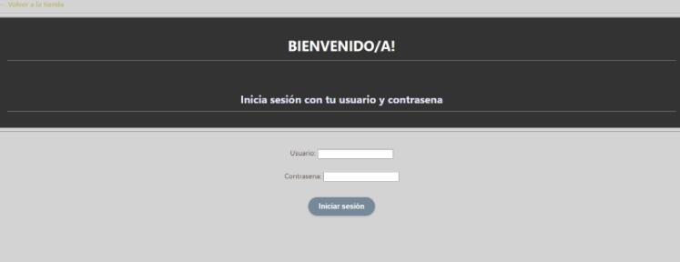
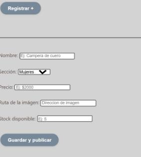
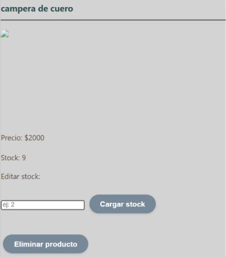
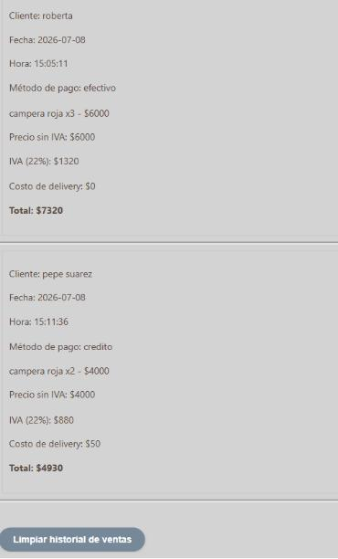

Volver a la página principal
Manual de usuario
ÍNDICE
INTRODUCCIÓN
El objetivo de esta sección es proporcionar a detalle el funcionamiento de la página web, brindando una guía que
facilite el uso del sistema, explicando paso a paso las acciones que pueden realizar tanto los usuarios como el administrador.
SECCIÓN USUARIOS
Al ingresar al sitio web, no será necesario inicio de sesión previo siendo cliente.
Página principal de la tienda
Opciones dentro de la sección cliente
- Al recorrer la página podrá visualizar las categorías por género, haciendo clic en el botón de la categoría a la cual se
desea acceder la página automáticamente le llevará a la opción seleccionada, donde se podrán visualizar los productos con imagen
de referencia, precio, stock y la opción para seleccionar cuánta cantidad desea comprar.
-

Categorías de la tienda
- Si la cantidad seleccionada supera el valor del stock, la página mostrará una alerta de "no hay suficiente stock de tal artículo".
- Otra opción de búsqueda sería por producto, donde se encuentra una barra de búsqueda para filtrar el producto que se esté buscando, ya sea una campera, un pantalón, un buzo, etc.
- En cada producto que desee adquirir encontrará para marcar una opción "agregar al carrito" con la que automáticamente guardará ese producto en el carrito.
- En la parte inferior de la página hay dos botones: uno para visualizar el carrito y otro para volver a la parte superior de la página.
CARRITO (SECCIÓN CLIENTES)
Cuando decida que ya no quiere agregar más productos a su compra, podrá visualizar varias cosas dentro de la opción "ver carrito".

Página del carrito
- Los productos o el producto que seleccionó
- Un botón para quitar ese producto del carrito
- Opción de actualizar el carrito si agregó o modificó las cantidades
- Detalles del subtotal + IVA. La página avisa que con tarjeta de débito se le podrá hacer un pequeño descuento.
Confirmación de compra
Para dar por finalizada su compra (en el botón finalizar compra), deberá:

Página de finalizar compra
- Llenar un formulario nombre y apellido + fecha en la que se realizó la compra
- Seleccionar un método de entrega del cual dependerá si se le cobra o no
- Ingresar su dirección en caso de querer que su pedido llegue a su domicilio
- Para finalizar elija el método de pago con el cual va a realizar su compra y presione en finalizar compra
- La página le enviará una alerta de confirmación de compra, con el total a pagar. El carrito se va a vaciar automáticamente
SECCIÓN ADMINISTRADOR
El administrador al ingresar a la página principal como cualquier usuario, podrá dirigirse al apartado administrativo desde
la opción admin arriba a la izquierda, donde deberá ingresar usuario y contraseña correctos e iniciar sesión.

Página del administrador
Si el usuario y contraseña son incorrectos la página automáticamente mandará una alerta de "usuario o contraseña incorrectos".
Opciones dentro de la sección administrador
- Con el botón "Registrar +", como administrador podrá registrar productos con campos obligatorios:
nombre del producto, sección género, precio, enlace de la imagen relacionada al producto, y stock.
Al darle guardar y publicar, se agregará a la página principal donde el cliente podrá verlo. Además de mostrarse en la misma
página de Gestion Admin para que si lo desea, pueda modificarlo u eliminarlo. Si alguno de los campos está vacío,
la página mostrará una alerta de "debe completar todos los campos".
- Actualizar stock de cualquier producto: En la página del admin, se puede actualizar el stock a los productos ya
registrados, escibiendo el nuevo número y clickeando en el botón "cargar stock", se actualizará automáticamente.
El usuario visualizará esos cambios en la página principal de la tienda.
- El admin también podrá eliminar productos de la tienda, simplemente situándose en el producto que desea quitar y dándole
al botón eliminar producto. No hay retroceso ante esta acción.
- Por último, el administrador puede ver el historial de venta, con los datos de los clientes.
El administrador también podrá limpiar el historial de ventas, con el botón debajo de las ventas realizadas.
Referencias fotográficas de las opciones del administrador
Sección para agregar productos

Sección para eliminar productos y cargar stock

Sección ver y eliminar historial

Volver a la página principal